Starbucks Coffee Company has revolutionized the coffee-drinking habits of millions of people all over the world. Starbucks, whose bright green-and-white logo is almost as familiar as the golden arches of McDonald’s, began in Seattle in 1971. Fifteen years later it had grown into a chain of four stores in the Seattle area. Then in 1987 Howard Schultz, a former Starbucks employee, who had become intrigued by the culture of Italian coffee bars, bought the company from its founders for $3.8 million. In 2011, Americans were willingly paying $5 or more for a cappuccino or a latté, and Starbucks had grown to become an international chain, with approximately 17,000 stores in more than 50 countries.
The change in American consumers’ taste for coffee and the profits raked in by Starbucks lured other companies to get into the game. Retailers such as Seattle’s Best Coffee and Gloria Jean’s Coffees entered the market, and today there are thousands of coffee bars, carts, drive-throughs, and kiosks in downtowns, malls, and airports all around the country. Even McDonald’s began selling specialty coffees.
But over the last decade the price of coffee beans has been quite volatile, nearly doubling between 2009 and 2011, primarily due to bad harvests in central America. Cappuccinos and lattés were suddenly more expensive.
MarketsThe institutions that bring together buyers and sellers., the institutions that bring together buyers and sellers, are always responding to events, such as bad harvests and changing consumer tastes that affect the prices and quantities of particular goods. The demand for some goods increases, while the demand for others decreases. The supply of some goods rises, while the supply of others falls. As such events unfold, prices adjust to keep markets in balance. This chapter explains how the market forces of demand and supply interact to determine equilibrium prices and equilibrium quantities of goods and services. We will see how prices and quantities adjust to changes in demand and supply and how changes in prices serve as signals to buyers and sellers.
The model of demand and supply that we shall develop in this chapter is one of the most powerful tools in all of economic analysis. You will be using it throughout your study of economics. We will first look at the variables that influence demand. Then we will turn to supply, and finally we will put demand and supply together to explore how the model of demand and supply operates. As we examine the model, bear in mind that demand is a representation of the behavior of buyers and that supply is a representation of the behavior of sellers. Buyers may be consumers purchasing groceries or producers purchasing iron ore to make steel. Sellers may be firms selling cars or households selling their labor services. We shall see that the ideas of demand and supply apply, whatever the identity of the buyers or sellers and whatever the good or service being exchanged in the market. In this chapter, we shall focus on buyers and sellers of goods and services.
How many pizzas will people eat this year? How many doctor visits will people make? How many houses will people buy?
Each good or service has its own special characteristics that determine the quantity people are willing and able to consume. One is the price of the good or service itself. Other independent variables that are important determinants of demand include consumer preferences, prices of related goods and services, income, demographic characteristics such as population size, and buyer expectations. The number of pizzas people will purchase, for example, depends very much on how much they like pizza. It also depends on the prices for alternatives such as hamburgers or spaghetti. The number of doctor visits is likely to vary with income—people with higher incomes are likely to see a doctor more often than people with lower incomes. The demands for pizza, for doctor visits, and for housing are certainly affected by the age distribution of the population and its size.
While different variables play different roles in influencing the demands for different goods and services, economists pay special attention to one: the price of the good or service. Given the values of all the other variables that affect demand, a higher price tends to reduce the quantity people demand, and a lower price tends to increase it. A medium pizza typically sells for $5 to $10. Suppose the price were $30. Chances are, you would buy fewer pizzas at that price than you do now. Suppose pizzas typically sold for $2 each. At that price, people would be likely to buy more pizzas than they do now.
We will discuss first how price affects the quantity demanded of a good or service and then how other variables affect demand.
Because people will purchase different quantities of a good or service at different prices, economists must be careful when speaking of the “demand” for something. They have therefore developed some specific terms for expressing the general concept of demand.
The quantity demandedThe quantity buyers are willing and able to buy of a good or service at a particular price during a particular period, all other things unchanged. of a good or service is the quantity buyers are willing and able to buy at a particular price during a particular period, all other things unchanged. (As we learned, we can substitute the Latin phrase “ceteris paribus” for “all other things unchanged.”) Suppose, for example, that 100,000 movie tickets are sold each month in a particular town at a price of $8 per ticket. That quantity—100,000—is the quantity of movie admissions demanded per month at a price of $8. If the price were $12, we would expect the quantity demanded to be less. If it were $4, we would expect the quantity demanded to be greater. The quantity demanded at each price would be different if other things that might affect it, such as the population of the town, were to change. That is why we add the qualifier that other things have not changed to the definition of quantity demanded.
A demand scheduleA table that shows the quantities of a good or service demanded at different prices during a particular period, all other things unchanged. is a table that shows the quantities of a good or service demanded at different prices during a particular period, all other things unchanged. To introduce the concept of a demand schedule, let us consider the demand for coffee in the United States. We will ignore differences among types of coffee beans and roasts, and speak simply of coffee. The table in Figure 3.1 "A Demand Schedule and a Demand Curve" shows quantities of coffee that will be demanded each month at prices ranging from $9 to $4 per pound; the table is a demand schedule. We see that the higher the price, the lower the quantity demanded.
Figure 3.1 A Demand Schedule and a Demand Curve
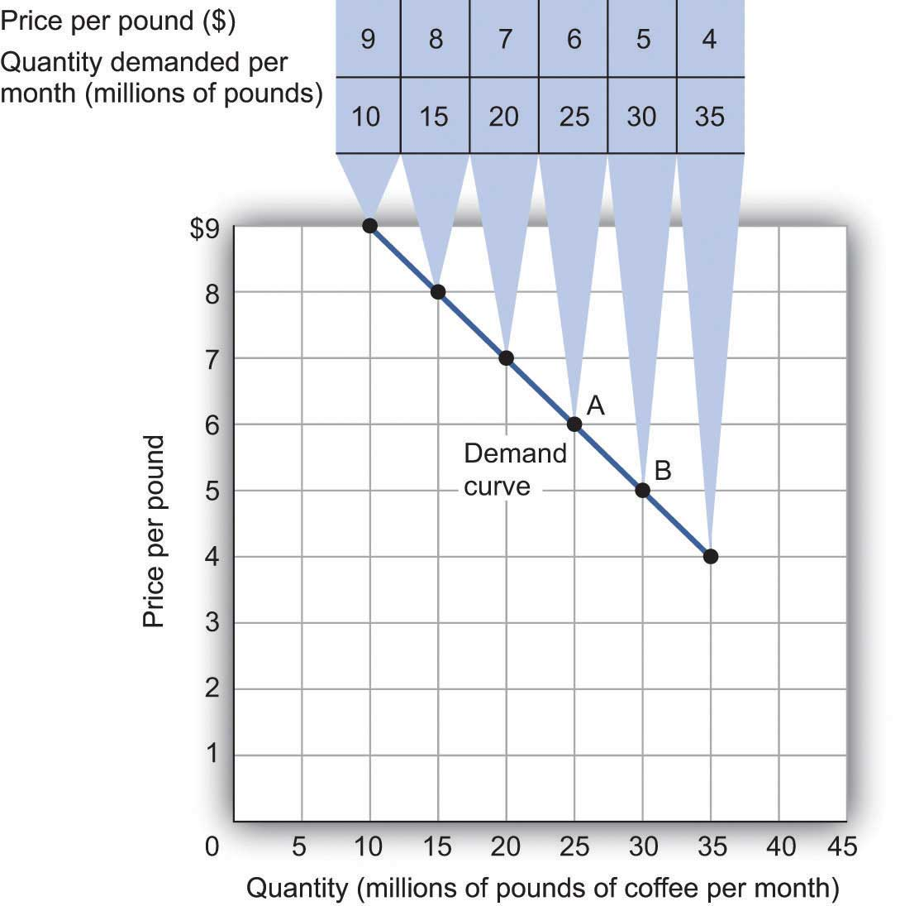The table is a demand schedule; it shows quantities of coffee demanded per month in the United States at particular prices, all other things unchanged. These data are then plotted on the demand curve. At point A on the curve, 25 million pounds of coffee per month are demanded at a price of $6 per pound. At point B, 30 million pounds of coffee per month are demanded at a price of $5 per pound.
The information given in a demand schedule can be presented with a demand curveA graphical representation of a demand schedule., which is a graphical representation of a demand schedule. A demand curve thus shows the relationship between the price and quantity demanded of a good or service during a particular period, all other things unchanged. The demand curve in Figure 3.1 "A Demand Schedule and a Demand Curve" shows the prices and quantities of coffee demanded that are given in the demand schedule. At point A, for example, we see that 25 million pounds of coffee per month are demanded at a price of $6 per pound. By convention, economists graph price on the vertical axis and quantity on the horizontal axis.
Price alone does not determine the quantity of coffee or any other good that people buy. To isolate the effect of changes in price on the quantity of a good or service demanded, however, we show the quantity demanded at each price, assuming that those other variables remain unchanged. We do the same thing in drawing a graph of the relationship between any two variables; we assume that the values of other variables that may affect the variables shown in the graph (such as income or population) remain unchanged for the period under consideration.
A change in price, with no change in any of the other variables that affect demand, results in a movement along the demand curve. For example, if the price of coffee falls from $6 to $5 per pound, consumption rises from 25 million pounds to 30 million pounds per month. That is a movement from point A to point B along the demand curve in Figure 3.1 "A Demand Schedule and a Demand Curve". A movement along a demand curve that results from a change in price is called a change in quantity demandedA movement along a demand curve that results from a change in price.. Note that a change in quantity demanded is not a change or shift in the demand curve; it is a movement along the demand curve.
The negative slope of the demand curve in Figure 3.1 "A Demand Schedule and a Demand Curve" suggests a key behavioral relationship in economics. All other things unchanged, the law of demandFor virtually all goods and services, a higher price leads to a reduction in quantity demanded and a lower price leads to an increase in quantity demanded. holds that, for virtually all goods and services, a higher price leads to a reduction in quantity demanded and a lower price leads to an increase in quantity demanded.
The law of demand is called a law because the results of countless studies are consistent with it. Undoubtedly, you have observed one manifestation of the law. When a store finds itself with an overstock of some item, such as running shoes or tomatoes, and needs to sell these items quickly, what does it do? It typically has a sale, expecting that a lower price will increase the quantity demanded. In general, we expect the law of demand to hold. Given the values of other variables that influence demand, a higher price reduces the quantity demanded. A lower price increases the quantity demanded. Demand curves, in short, slope downward.
Of course, price alone does not determine the quantity of a good or service that people consume. Coffee consumption, for example, will be affected by such variables as income and population. Preferences also play a role. The story at the beginning of the chapter illustrates how Starbucks “turned people on” to coffee. We also expect other prices to affect coffee consumption. People often eat doughnuts or bagels with their coffee, so a reduction in the price of doughnuts or bagels might induce people to drink more coffee. An alternative to coffee is tea, so a reduction in the price of tea might result in the consumption of more tea and less coffee. Thus, a change in any one of the variables held constant in constructing a demand schedule will change the quantities demanded at each price. The result will be a shift in the entire demand curve rather than a movement along the demand curve. A shift in a demand curve is called a change in demandA shift in a demand curve..
Suppose, for example, that something happens to increase the quantity of coffee demanded at each price. Several events could produce such a change: an increase in incomes, an increase in population, or an increase in the price of tea would each be likely to increase the quantity of coffee demanded at each price. Any such change produces a new demand schedule. Figure 3.2 "An Increase in Demand" shows such a change in the demand schedule for coffee. We see that the quantity of coffee demanded per month is greater at each price than before. We show that graphically as a shift in the demand curve. The original curve, labeled D1, shifts to the right to D2. At a price of $6 per pound, for example, the quantity demanded rises from 25 million pounds per month (point A) to 35 million pounds per month (point A′).
Figure 3.2 An Increase in Demand
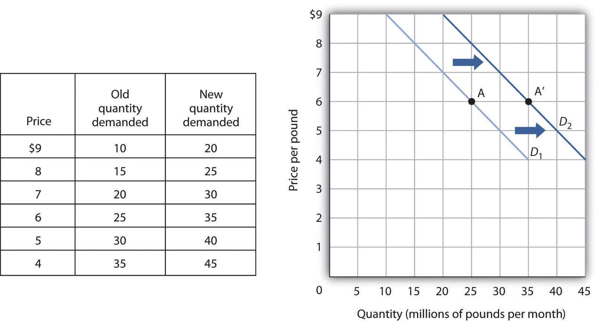An increase in the quantity of a good or service demanded at each price is shown as an increase in demand. Here, the original demand curve D1 shifts to D2. Point A on D1 corresponds to a price of $6 per pound and a quantity demanded of 25 million pounds of coffee per month. On the new demand curve D2, the quantity demanded at this price rises to 35 million pounds of coffee per month (point A′).
Just as demand can increase, it can decrease. In the case of coffee, demand might fall as a result of events such as a reduction in population, a reduction in the price of tea, or a change in preferences. For example, a definitive finding that the caffeine in coffee contributes to heart disease, which is currently being debated in the scientific community, could change preferences and reduce the demand for coffee.
A reduction in the demand for coffee is illustrated in Figure 3.3 "A Reduction in Demand". The demand schedule shows that less coffee is demanded at each price than in Figure 3.1 "A Demand Schedule and a Demand Curve". The result is a shift in demand from the original curve D1 to D3. The quantity of coffee demanded at a price of $6 per pound falls from 25 million pounds per month (point A) to 15 million pounds per month (point A″). Note, again, that a change in quantity demanded, ceteris paribus, refers to a movement along the demand curve, while a change in demand refers to a shift in the demand curve.
Figure 3.3 A Reduction in Demand
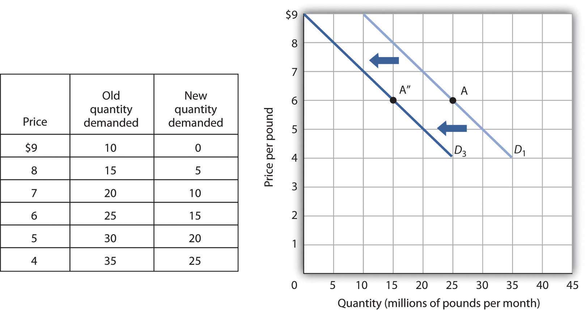A reduction in demand occurs when the quantities of a good or service demanded fall at each price. Here, the demand schedule shows a lower quantity of coffee demanded at each price than we had in Figure 3.1 "A Demand Schedule and a Demand Curve". The reduction shifts the demand curve for coffee to D3 from D1. The quantity demanded at a price of $6 per pound, for example, falls from 25 million pounds per month (point A) to 15 million pounds of coffee per month (point A″).
A variable that can change the quantity of a good or service demanded at each price is called a demand shifterA variable that can change the quantity of a good or service demanded at each price.. When these other variables change, the all-other-things-unchanged conditions behind the original demand curve no longer hold. Although different goods and services will have different demand shifters, the demand shifters are likely to include (1) consumer preferences, (2) the prices of related goods and services, (3) income, (4) demographic characteristics, and (5) buyer expectations. Next we look at each of these.
Changes in preferences of buyers can have important consequences for demand. We have already seen how Starbucks supposedly increased the demand for coffee. Another example is reduced demand for cigarettes caused by concern about the effect of smoking on health. A change in preferences that makes one good or service more popular will shift the demand curve to the right. A change that makes it less popular will shift the demand curve to the left.
Suppose the price of doughnuts were to fall. Many people who drink coffee enjoy dunking doughnuts in their coffee; the lower price of doughnuts might therefore increase the demand for coffee, shifting the demand curve for coffee to the right. A lower price for tea, however, would be likely to reduce coffee demand, shifting the demand curve for coffee to the left.
In general, if a reduction in the price of one good increases the demand for another, the two goods are called complementsTwo goods for which an increase in price of one reduces the demand for the other.. If a reduction in the price of one good reduces the demand for another, the two goods are called substitutesTwo goods for which an increase in price of one increases the demand for the other.. These definitions hold in reverse as well: two goods are complements if an increase in the price of one reduces the demand for the other, and they are substitutes if an increase in the price of one increases the demand for the other. Doughnuts and coffee are complements; tea and coffee are substitutes.
Complementary goods are goods used in conjunction with one another. Tennis rackets and tennis balls, eggs and bacon, and stationery and postage stamps are complementary goods. Substitute goods are goods used instead of one another. iPODs, for example, are likely to be substitutes for CD players. Breakfast cereal is a substitute for eggs. A file attachment to an e-mail is a substitute for both a fax machine and postage stamps.

As incomes rise, people increase their consumption of many goods and services, and as incomes fall, their consumption of these goods and services falls. For example, an increase in income is likely to raise the demand for gasoline, ski trips, new cars, and jewelry. There are, however, goods and services for which consumption falls as income rises—and rises as income falls. As incomes rise, for example, people tend to consume more fresh fruit but less canned fruit.
A good for which demand increases when income increases is called a normal goodA good for which demand increases when income increases.. A good for which demand decreases when income increases is called an inferior goodA good for which demand decreases when income increases.. An increase in income shifts the demand curve for fresh fruit (a normal good) to the right; it shifts the demand curve for canned fruit (an inferior good) to the left.
The number of buyers affects the total quantity of a good or service that will be bought; in general, the greater the population, the greater the demand. Other demographic characteristics can affect demand as well. As the share of the population over age 65 increases, the demand for medical services, ocean cruises, and motor homes increases. The birth rate in the United States fell sharply between 1955 and 1975 but has gradually increased since then. That increase has raised the demand for such things as infant supplies, elementary school teachers, soccer coaches, in-line skates, and college education. Demand can thus shift as a result of changes in both the number and characteristics of buyers.
The consumption of goods that can be easily stored, or whose consumption can be postponed, is strongly affected by buyer expectations. The expectation of newer TV technologies, such as high-definition TV, could slow down sales of regular TVs. If people expect gasoline prices to rise tomorrow, they will fill up their tanks today to try to beat the price increase. The same will be true for goods such as automobiles and washing machines: an expectation of higher prices in the future will lead to more purchases today. If the price of a good is expected to fall, however, people are likely to reduce their purchases today and await tomorrow’s lower prices. The expectation that computer prices will fall, for example, can reduce current demand.
It is crucial to distinguish between a change in quantity demanded, which is a movement along the demand curve caused by a change in price, and a change in demand, which implies a shift of the demand curve itself. A change in demand is caused by a change in a demand shifter. An increase in demand is a shift of the demand curve to the right. A decrease in demand is a shift in the demand curve to the left. This drawing of a demand curve highlights the difference.
All other things unchanged, what happens to the demand curve for DVD rentals if there is (a) an increase in the price of movie theater tickets, (b) a decrease in family income, or (c) an increase in the price of DVD rentals? In answering this and other “Try It!” problems in this chapter, draw and carefully label a set of axes. On the horizontal axis of your graph, show the quantity of DVD rentals. It is necessary to specify the time period to which your quantity pertains (e.g., “per period,” “per week,” or “per year”). On the vertical axis show the price per DVD rental. Since you do not have specific data on prices and quantities demanded, make a “free-hand” drawing of the curve or curves you are asked to examine. Focus on the general shape and position of the curve(s) before and after events occur. Draw new curve(s) to show what happens in each of the circumstances given. The curves could shift to the left or to the right, or stay where they are.
Unless you attend a “virtual” campus, chances are you have engaged in more than one conversation about how hard it is to find a place to park on campus. Indeed, according to Clark Kerr, a former president of the University of California system, a university is best understood as a group of people “held together by a common grievance over parking.”
Clearly, the demand for campus parking spaces has grown substantially over the past few decades. In surveys conducted by Daniel Kenney, Ricardo Dumont, and Ginger Kenney, who work for the campus design company Sasaki and Associates, it was found that 7 out of 10 students own their own cars. They have interviewed “many students who confessed to driving from their dormitories to classes that were a five-minute walk away,” and they argue that the deterioration of college environments is largely attributable to the increased use of cars on campus and that colleges could better service their missions by not adding more parking spaces.
Since few universities charge enough for parking to even cover the cost of building and maintaining parking lots, the rest is paid for by all students as part of tuition. Their research shows that “for every 1,000 parking spaces, the median institution loses almost $400,000 a year for surface parking, and more than $1,200,000 for structural parking.” Fear of a backlash from students and their parents, as well as from faculty and staff, seems to explain why campus administrators do not simply raise the price of parking on campus.
While Kenney and his colleagues do advocate raising parking fees, if not all at once then over time, they also suggest some subtler, and perhaps politically more palatable, measures—in particular, shifting the demand for parking spaces to the left by lowering the prices of substitutes.
Two examples they noted were at the University of Washington and the University of Colorado at Boulder. At the University of Washington, car poolers may park for free. This innovation has reduced purchases of single-occupancy parking permits by 32% over a decade. According to University of Washington assistant director of transportation services Peter Dewey, “Without vigorously managing our parking and providing commuter alternatives, the university would have been faced with adding approximately 3,600 parking spaces, at a cost of over $100 million…The university has created opportunities to make capital investments in buildings supporting education instead of structures for cars.” At the University of Colorado, free public transit has increased use of buses and light rail from 300,000 to 2 million trips per year over the last decade. The increased use of mass transit has allowed the university to avoid constructing nearly 2,000 parking spaces, which has saved about $3.6 million annually.
Sources: Daniel R. Kenney, “How to Solve Campus Parking Problems Without Adding More Parking,” The Chronicle of Higher Education, March 26, 2004, Section B, pp. B22-B23.
Since going to the movies is a substitute for watching a DVD at home, an increase in the price of going to the movies should cause more people to switch from going to the movies to staying at home and renting DVDs. Thus, the demand curve for DVD rentals will shift to the right when the price of movie theater tickets increases [Panel (a)].
A decrease in family income will cause the demand curve to shift to the left if DVD rentals are a normal good but to the right if DVD rentals are an inferior good. The latter may be the case for some families, since staying at home and watching DVDs is a cheaper form of entertainment than taking the family to the movies. For most others, however, DVD rentals are probably a normal good [Panel (b)].
An increase in the price of DVD rentals does not shift the demand curve for DVD rentals at all; rather, an increase in price, say from P1 to P2, is a movement upward to the left along the demand curve. At a higher price, people will rent fewer DVDs, say Q2 instead of Q1, ceteris paribus [Panel (c)].
What determines the quantity of a good or service sellers are willing to offer for sale? Price is one factor; ceteris paribus, a higher price is likely to induce sellers to offer a greater quantity of a good or service. Production cost is another determinant of supply. Variables that affect production cost include the prices of factors used to produce the good or service, returns from alternative activities, technology, the expectations of sellers, and natural events such as weather changes. Still another factor affecting the quantity of a good that will be offered for sale is the number of sellers—the greater the number of sellers of a particular good or service, the greater will be the quantity offered at any price per time period.
The quantity suppliedThe quantity sellers are willing to sell of a good or service at a particular price during a particular period, all other things unchanged. of a good or service is the quantity sellers are willing to sell at a particular price during a particular period, all other things unchanged. Ceteris paribus, the receipt of a higher price increases profits and induces sellers to increase the quantity they supply.
In general, when there are many sellers of a good, an increase in price results in an increase in quantity supplied, and this relationship is often referred to as the law of supply. We will see, though, through our exploration of microeconomics, that there are a number of exceptions to this relationship. There are cases in which a higher price will not induce an increase in quantity supplied. Goods that cannot be produced, such as additional land on the corner of Park Avenue and 56th Street in Manhattan, are fixed in supply—a higher price cannot induce an increase in the quantity supplied. There are even cases, which we investigate in microeconomic analysis, in which a higher price induces a reduction in the quantity supplied.
Generally speaking, however, when there are many sellers of a good, an increase in price results in a greater quantity supplied. The relationship between price and quantity supplied is suggested in a supply scheduleA table that shows quantities supplied at different prices during a particular period, all other things unchanged., a table that shows quantities supplied at different prices during a particular period, all other things unchanged. Figure 3.4 "A Supply Schedule and a Supply Curve" gives a supply schedule for the quantities of coffee that will be supplied per month at various prices, ceteris paribus. At a price of $4 per pound, for example, producers are willing to supply 15 million pounds of coffee per month. A higher price, say $6 per pound, induces sellers to supply a greater quantity—25 million pounds of coffee per month.
Figure 3.4 A Supply Schedule and a Supply Curve
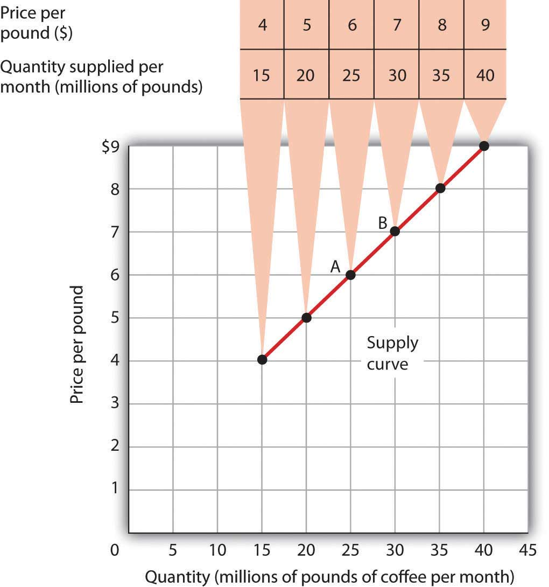The supply schedule shows the quantity of coffee that will be supplied in the United States each month at particular prices, all other things unchanged. The same information is given graphically in the supply curve. The values given here suggest a positive relationship between price and quantity supplied.
A supply curveA graphical representation of a supply schedule. is a graphical representation of a supply schedule. It shows the relationship between price and quantity supplied during a particular period, all other things unchanged. Because the relationship between price and quantity supplied is generally positive, supply curves are generally upward sloping. The supply curve for coffee in Figure 3.4 "A Supply Schedule and a Supply Curve" shows graphically the values given in the supply schedule.
A change in price causes a movement along the supply curve; such a movement is called a change in quantity suppliedMovement along the supply curve caused by a change in price.. As is the case with a change in quantity demanded, a change in quantity supplied does not shift the supply curve. By definition, it is a movement along the supply curve. For example, if the price rises from $6 per pound to $7 per pound, the quantity supplied rises from 25 million pounds per month to 30 million pounds per month. That’s a movement from point A to point B along the supply curve in Figure 3.4 "A Supply Schedule and a Supply Curve".
When we draw a supply curve, we assume that other variables that affect the willingness of sellers to supply a good or service are unchanged. It follows that a change in any of those variables will cause a change in supplyA shift in the supply curve., which is a shift in the supply curve. A change that increases the quantity of a good or service supplied at each price shifts the supply curve to the right. Suppose, for example, that the price of fertilizer falls. That will reduce the cost of producing coffee and thus increase the quantity of coffee producers will offer for sale at each price. The supply schedule in Figure 3.5 "An Increase in Supply" shows an increase in the quantity of coffee supplied at each price. We show that increase graphically as a shift in the supply curve from S1 to S2. We see that the quantity supplied at each price increases by 10 million pounds of coffee per month. At point A on the original supply curve S1, for example, 25 million pounds of coffee per month are supplied at a price of $6 per pound. After the increase in supply, 35 million pounds per month are supplied at the same price (point A′ on curve S2).
Figure 3.5 An Increase in Supply
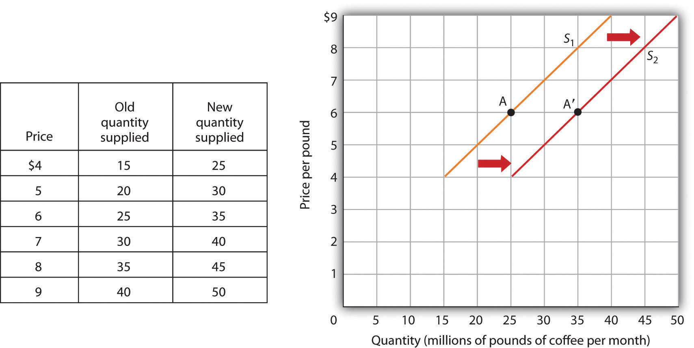If there is a change in supply that increases the quantity supplied at each price, as is the case in the supply schedule here, the supply curve shifts to the right. At a price of $6 per pound, for example, the quantity supplied rises from the previous level of 25 million pounds per month on supply curve S1 (point A) to 35 million pounds per month on supply curve S2 (point A′).
An event that reduces the quantity supplied at each price shifts the supply curve to the left. An increase in production costs and excessive rain that reduces the yields from coffee plants are examples of events that might reduce supply. Figure 3.6 "A Reduction in Supply" shows a reduction in the supply of coffee. We see in the supply schedule that the quantity of coffee supplied falls by 10 million pounds of coffee per month at each price. The supply curve thus shifts from S1 to S3.
Figure 3.6 A Reduction in Supply
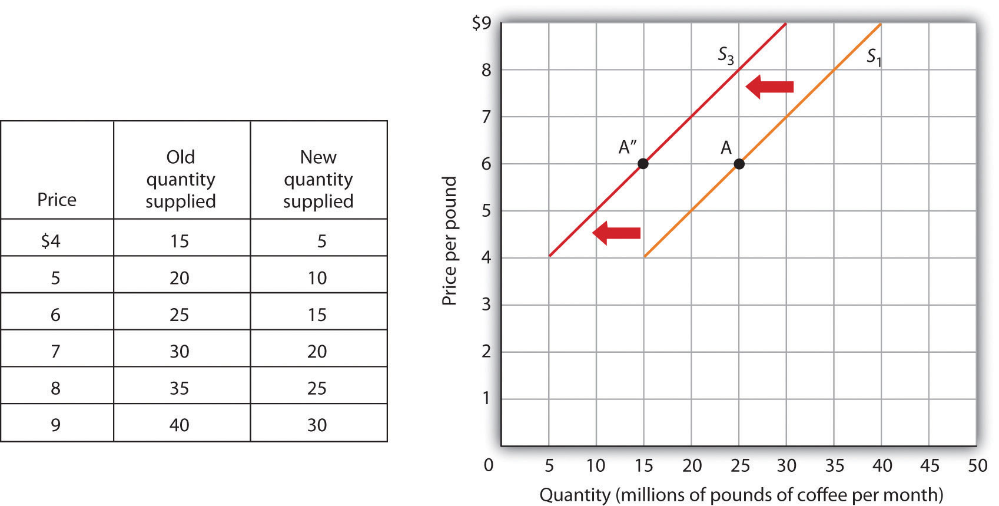A change in supply that reduces the quantity supplied at each price shifts the supply curve to the left. At a price of $6 per pound, for example, the original quantity supplied was 25 million pounds of coffee per month (point A). With a new supply curve S3, the quantity supplied at that price falls to 15 million pounds of coffee per month (point A″).
A variable that can change the quantity of a good or service supplied at each price is called a supply shifterA variable that can change the quantity of a good or service supplied at each price.. Supply shifters include (1) prices of factors of production, (2) returns from alternative activities, (3) technology, (4) seller expectations, (5) natural events, and (6) the number of sellers. When these other variables change, the all-other-things-unchanged conditions behind the original supply curve no longer hold. Let us look at each of the supply shifters.
A change in the price of labor or some other factor of production will change the cost of producing any given quantity of the good or service. This change in the cost of production will change the quantity that suppliers are willing to offer at any price. An increase in factor prices should decrease the quantity suppliers will offer at any price, shifting the supply curve to the left. A reduction in factor prices increases the quantity suppliers will offer at any price, shifting the supply curve to the right.
Suppose coffee growers must pay a higher wage to the workers they hire to harvest coffee or must pay more for fertilizer. Such increases in production cost will cause them to produce a smaller quantity at each price, shifting the supply curve for coffee to the left. A reduction in any of these costs increases supply, shifting the supply curve to the right.
To produce one good or service means forgoing the production of another. The concept of opportunity cost in economics suggests that the value of the activity forgone is the opportunity cost of the activity chosen; this cost should affect supply. For example, one opportunity cost of producing eggs is not selling chickens. An increase in the price people are willing to pay for fresh chicken would make it more profitable to sell chickens and would thus increase the opportunity cost of producing eggs. It would shift the supply curve for eggs to the left, reflecting a decrease in supply.
A change in technology alters the combinations of inputs or the types of inputs required in the production process. An improvement in technology usually means that fewer and/or less costly inputs are needed. If the cost of production is lower, the profits available at a given price will increase, and producers will produce more. With more produced at every price, the supply curve will shift to the right, meaning an increase in supply.
Impressive technological changes have occurred in the computer industry in recent years. Computers are much smaller and are far more powerful than they were only a few years ago—and they are much cheaper to produce. The result has been a huge increase in the supply of computers, shifting the supply curve to the right.
While we usually think of technology as enhancing production, declines in production due to problems in technology are also possible. Outlawing the use of certain equipment without pollution-control devices has increased the cost of production for many goods and services, thereby reducing profits available at any price and shifting these supply curves to the left.
All supply curves are based in part on seller expectations about future market conditions. Many decisions about production and selling are typically made long before a product is ready for sale. Those decisions necessarily depend on expectations. Changes in seller expectations can have important effects on price and quantity.
Consider, for example, the owners of oil deposits. Oil pumped out of the ground and used today will be unavailable in the future. If a change in the international political climate leads many owners to expect that oil prices will rise in the future, they may decide to leave their oil in the ground, planning to sell it later when the price is higher. Thus, there will be a decrease in supply; the supply curve for oil will shift to the left.
Storms, insect infestations, and drought affect agricultural production and thus the supply of agricultural goods. If something destroys a substantial part of an agricultural crop, the supply curve will shift to the left. The terrible cyclone that killed more than 50,000 people in Myanmar in 2008 also destroyed some of the country’s prime rice growing land. That shifted the supply curve for rice to the left. If there is an unusually good harvest, the supply curve will shift to the right.
The supply curve for an industry, such as coffee, includes all the sellers in the industry. A change in the number of sellers in an industry changes the quantity available at each price and thus changes supply. An increase in the number of sellers supplying a good or service shifts the supply curve to the right; a reduction in the number of sellers shifts the supply curve to the left.
The market for cellular phone service has been affected by an increase in the number of firms offering the service. Over the past decade, new cellular phone companies emerged, shifting the supply curve for cellular phone service to the right.
There are two special things to note about supply curves. The first is similar to the Heads Up! on demand curves: it is important to distinguish carefully between changes in supply and changes in quantity supplied. A change in supply results from a change in a supply shifter and implies a shift of the supply curve to the right or left. A change in price produces a change in quantity supplied and induces a movement along the supply curve. A change in price does not shift the supply curve.
The second caution relates to the interpretation of increases and decreases in supply. Notice that in Figure 3.5 "An Increase in Supply" an increase in supply is shown as a shift of the supply curve to the right; the curve shifts in the direction of increasing quantity with respect to the horizontal axis. In Figure 3.6 "A Reduction in Supply" a reduction in supply is shown as a shift of the supply curve to the left; the curve shifts in the direction of decreasing quantity with respect to the horizontal axis.
Because the supply curve is upward sloping, a shift to the right produces a new curve that in a sense lies “below” the original curve. It is easy to make the mistake of thinking of such a shift as a shift “down” and therefore as a reduction in supply. Similarly, it is easy to make the mistake of showing an increase in supply with a new curve that lies “above” the original curve. But that is a reduction in supply!
To avoid such errors, focus on the fact that an increase in supply is an increase in the quantity supplied at each price and shifts the supply curve in the direction of increased quantity on the horizontal axis. Similarly, a reduction in supply is a reduction in the quantity supplied at each price and shifts the supply curve in the direction of a lower quantity on the horizontal axis.
If all other things are unchanged, what happens to the supply curve for DVD rentals if there is (a) an increase in wages paid to DVD rental store clerks, (b) an increase in the price of DVD rentals, or (c) an increase in the number of DVD rental stores? Draw a graph that shows what happens to the supply curve in each circumstance. The supply curve can shift to the left or to the right, or stay where it is. Remember to label the axes and curves, and remember to specify the time period (e.g., “DVDs rented per week”).
It was cookies that lured the monks of St. Benedict’s out of the egg business, and now private retreat sponsorship is luring them away from cookies.
St. Benedict’s is a Benedictine monastery, nestled on a ranch high in the Colorado Rockies, about 20 miles down the road from Aspen. The monastery’s 20 monks operate the ranch to support themselves and to provide help for poor people in the area. They lease out about 3,500 acres of their land to cattle and sheep grazers, produce cookies, and sponsor private retreats. They used to produce eggs.
Attracted by potential profits and the peaceful nature of the work, the monks went into the egg business in 1967. They had 10,000 chickens producing their Monastery Eggs brand. For a while, business was good. Very good. Then, in the late 1970s, the price of chicken feed started to rise rapidly.
“When we started in the business, we were paying $60 to $80 a ton for feed—delivered,” recalls the monastery’s abbot, Father Joseph Boyle. “By the late 1970s, our cost had more than doubled. We were paying $160 to $200 a ton. That really hurt, because feed represents a large part of the cost of producing eggs.”
The monks adjusted to the blow. “When grain prices were lower, we’d pull a hen off for a few weeks to molt, then return her to laying. After grain prices went up, it was 12 months of laying and into the soup pot,” Fr. Joseph says.
Grain prices continued to rise in the 1980s and increased the costs of production for all egg producers. It caused the supply of eggs to fall. Demand fell at the same time, as Americans worried about the cholesterol in eggs. Times got tougher in the egg business.
“We were still making money in the financial sense,” Fr. Joseph says. “But we tried an experiment in 1985 producing cookies, and it was a success. We finally decided that devoting our time and energy to the cookies would pay off better than the egg business, so we quit the egg business in 1986.”
The mail-order cookie business was good to the monks. They sold 200,000 ounces of Monastery Cookies in 1987.
By 1998, however, they had limited their production of cookies, selling only locally and to gift shops. Since 2000, they have switched to “providing private retreats for individuals and groups—about 40 people per month,” according to Fr. Micah Schonberger.
The monks’ calculation of their opportunity costs revealed that they would earn a higher return through sponsorship of private retreats than in either cookies or eggs. This projection has proved correct.
And there is another advantage as well.
“The chickens didn’t stop laying eggs on Sunday,” Fr. Joseph chuckles. “When we shifted to cookies we could take Sundays off. We weren’t hemmed in the way we were with the chickens.” The move to providing retreats is even better in this regard. Since guests provide their own meals, most of the monastery’s effort goes into planning and scheduling, which frees up even more of their time for other worldly as well as spiritual pursuits.
Source: Personal interviews and the monastery’s website at http://www.snowmass.org.
DVD rental store clerks are a factor of production in the DVD rental market. An increase in their wages raises the cost of production, thereby causing the supply curve of DVD rentals to shift to the left [Panel (a)]. (Caution: It is possible that you thought of the wage increase as an increase in income, a demand shifter, that would lead to an increase in demand, but this would be incorrect. The question refers only to wages of DVD rental store clerks. They may rent some DVD, but their impact on total demand would be negligible. Besides, we have no information on what has happened overall to incomes of people who rent DVDs. We do know, however, that the cost of a factor of production, which is a supply shifter, increased.)
An increase in the price of DVD rentals does not shift the supply curve at all; rather, it corresponds to a movement upward to the right along the supply curve. At a higher price of P2 instead of P1, a greater quantity of DVD rentals, say Q2 instead of Q1, will be supplied [Panel (b)].
An increase in the number of stores renting DVDs will cause the supply curve to shift to the right [Panel (c)].
In this section we combine the demand and supply curves we have just studied into a new model. The model of demand and supplyModel that uses demand and supply curves to explain the determination of price and quantity in a market. uses demand and supply curves to explain the determination of price and quantity in a market.
The logic of the model of demand and supply is simple. The demand curve shows the quantities of a particular good or service that buyers will be willing and able to purchase at each price during a specified period. The supply curve shows the quantities that sellers will offer for sale at each price during that same period. By putting the two curves together, we should be able to find a price at which the quantity buyers are willing and able to purchase equals the quantity sellers will offer for sale.
Figure 3.7 "The Determination of Equilibrium Price and Quantity" combines the demand and supply data introduced in Figure 3.1 "A Demand Schedule and a Demand Curve" and Figure 3.4 "A Supply Schedule and a Supply Curve" Notice that the two curves intersect at a price of $6 per pound—at this price the quantities demanded and supplied are equal. Buyers want to purchase, and sellers are willing to offer for sale, 25 million pounds of coffee per month. The market for coffee is in equilibrium. Unless the demand or supply curve shifts, there will be no tendency for price to change. The equilibrium priceThe price at which quantity demanded equals quantity supplied. in any market is the price at which quantity demanded equals quantity supplied. The equilibrium price in the market for coffee is thus $6 per pound. The equilibrium quantityThe quantity demanded and supplied at the equilibrium price. is the quantity demanded and supplied at the equilibrium price. At a price above the equilibrium, there is a natural tendency for the price to fall. At a price below the equilibrium, there is a tendency for the price to rise.
Figure 3.7 The Determination of Equilibrium Price and Quantity
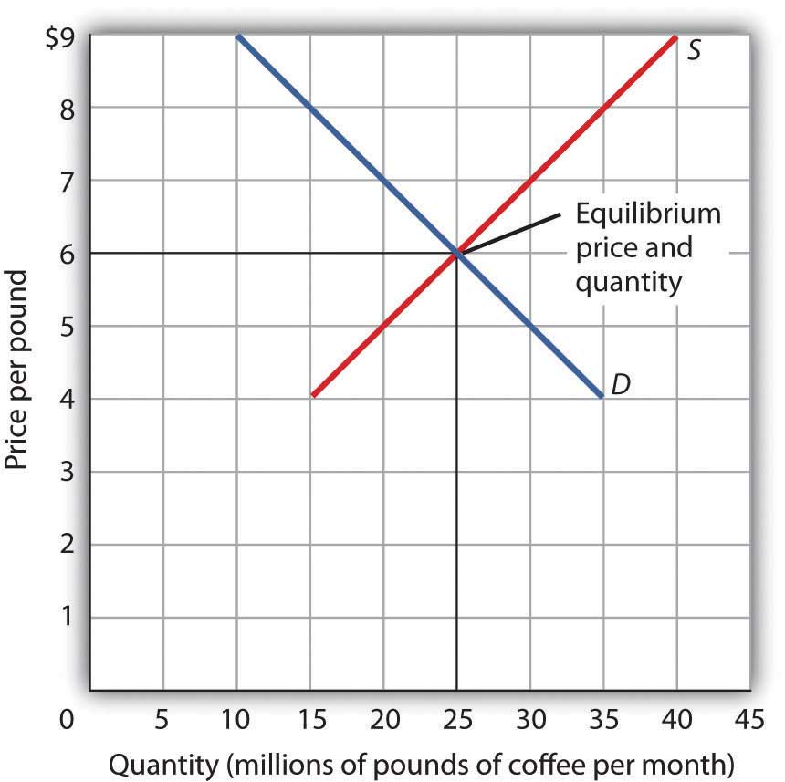When we combine the demand and supply curves for a good in a single graph, the point at which they intersect identifies the equilibrium price and equilibrium quantity. Here, the equilibrium price is $6 per pound. Consumers demand, and suppliers supply, 25 million pounds of coffee per month at this price.
With an upward-sloping supply curve and a downward-sloping demand curve, there is only a single price at which the two curves intersect. This means there is only one price at which equilibrium is achieved. It follows that at any price other than the equilibrium price, the market will not be in equilibrium. We next examine what happens at prices other than the equilibrium price.
Figure 3.8 "A Surplus in the Market for Coffee" shows the same demand and supply curves we have just examined, but this time the initial price is $8 per pound of coffee. Because we no longer have a balance between quantity demanded and quantity supplied, this price is not the equilibrium price. At a price of $8, we read over to the demand curve to determine the quantity of coffee consumers will be willing to buy—15 million pounds per month. The supply curve tells us what sellers will offer for sale—35 million pounds per month. The difference, 20 million pounds of coffee per month, is called a surplus. More generally, a surplusThe amount by which the quantity supplied exceeds the quantity demanded at the current price. is the amount by which the quantity supplied exceeds the quantity demanded at the current price. There is, of course, no surplus at the equilibrium price; a surplus occurs only if the current price exceeds the equilibrium price.
Figure 3.8 A Surplus in the Market for Coffee
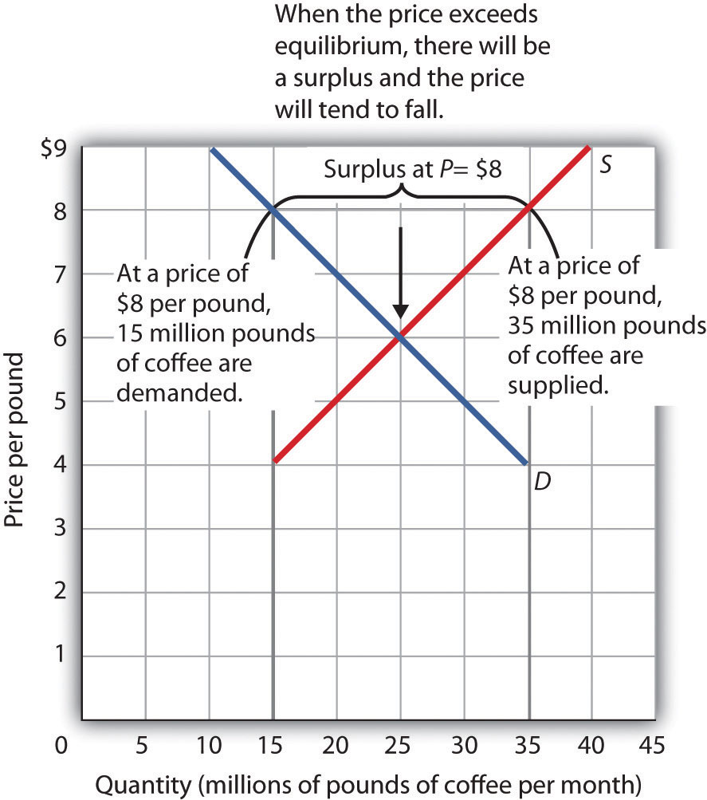At a price of $8, the quantity supplied is 35 million pounds of coffee per month and the quantity demanded is 15 million pounds per month; there is a surplus of 20 million pounds of coffee per month. Given a surplus, the price will fall quickly toward the equilibrium level of $6.
A surplus in the market for coffee will not last long. With unsold coffee on the market, sellers will begin to reduce their prices to clear out unsold coffee. As the price of coffee begins to fall, the quantity of coffee supplied begins to decline. At the same time, the quantity of coffee demanded begins to rise. Remember that the reduction in quantity supplied is a movement along the supply curve—the curve itself does not shift in response to a reduction in price. Similarly, the increase in quantity demanded is a movement along the demand curve—the demand curve does not shift in response to a reduction in price. Price will continue to fall until it reaches its equilibrium level, at which the demand and supply curves intersect. At that point, there will be no tendency for price to fall further. In general, surpluses in the marketplace are short-lived. The prices of most goods and services adjust quickly, eliminating the surplus. Later on, we will discuss some markets in which adjustment of price to equilibrium may occur only very slowly or not at all.
Just as a price above the equilibrium price will cause a surplus, a price below equilibrium will cause a shortage. A shortageThe amount by which the quantity demanded exceeds the quantity supplied at the current price. is the amount by which the quantity demanded exceeds the quantity supplied at the current price.
Figure 3.9 "A Shortage in the Market for Coffee" shows a shortage in the market for coffee. Suppose the price is $4 per pound. At that price, 15 million pounds of coffee would be supplied per month, and 35 million pounds would be demanded per month. When more coffee is demanded than supplied, there is a shortage.
Figure 3.9 A Shortage in the Market for Coffee
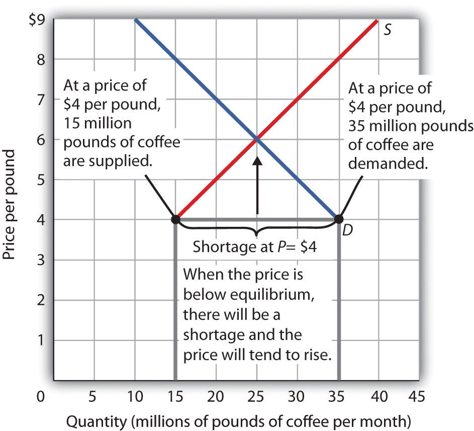At a price of $4 per pound, the quantity of coffee demanded is 35 million pounds per month and the quantity supplied is 15 million pounds per month. The result is a shortage of 20 million pounds of coffee per month.
In the face of a shortage, sellers are likely to begin to raise their prices. As the price rises, there will be an increase in the quantity supplied (but not a change in supply) and a reduction in the quantity demanded (but not a change in demand) until the equilibrium price is achieved.
Figure 3.10 Changes in Demand and Supply
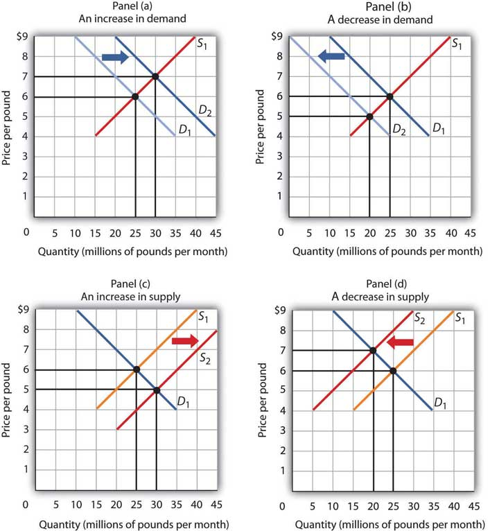A change in demand or in supply changes the equilibrium solution in the model. Panels (a) and (b) show an increase and a decrease in demand, respectively; Panels (c) and (d) show an increase and a decrease in supply, respectively.
A change in one of the variables (shifters) held constant in any model of demand and supply will create a change in demand or supply. A shift in a demand or supply curve changes the equilibrium price and equilibrium quantity for a good or service. Figure 3.10 "Changes in Demand and Supply" combines the information about changes in the demand and supply of coffee presented in Figure 3.2 "An Increase in Demand", Figure 3.3 "A Reduction in Demand", Figure 3.5 "An Increase in Supply", and Figure 3.6 "A Reduction in Supply" In each case, the original equilibrium price is $6 per pound, and the corresponding equilibrium quantity is 25 million pounds of coffee per month. Figure 3.10 "Changes in Demand and Supply" shows what happens with an increase in demand, a reduction in demand, an increase in supply, and a reduction in supply. We then look at what happens if both curves shift simultaneously. Each of these possibilities is discussed in turn below.
An increase in demand for coffee shifts the demand curve to the right, as shown in Panel (a) of Figure 3.10 "Changes in Demand and Supply". The equilibrium price rises to $7 per pound. As the price rises to the new equilibrium level, the quantity supplied increases to 30 million pounds of coffee per month. Notice that the supply curve does not shift; rather, there is a movement along the supply curve.
Demand shifters that could cause an increase in demand include a shift in preferences that leads to greater coffee consumption; a lower price for a complement to coffee, such as doughnuts; a higher price for a substitute for coffee, such as tea; an increase in income; and an increase in population. A change in buyer expectations, perhaps due to predictions of bad weather lowering expected yields on coffee plants and increasing future coffee prices, could also increase current demand.
Panel (b) of Figure 3.10 "Changes in Demand and Supply" shows that a decrease in demand shifts the demand curve to the left. The equilibrium price falls to $5 per pound. As the price falls to the new equilibrium level, the quantity supplied decreases to 20 million pounds of coffee per month.
Demand shifters that could reduce the demand for coffee include a shift in preferences that makes people want to consume less coffee; an increase in the price of a complement, such as doughnuts; a reduction in the price of a substitute, such as tea; a reduction in income; a reduction in population; and a change in buyer expectations that leads people to expect lower prices for coffee in the future.
An increase in the supply of coffee shifts the supply curve to the right, as shown in Panel (c) of Figure 3.10 "Changes in Demand and Supply". The equilibrium price falls to $5 per pound. As the price falls to the new equilibrium level, the quantity of coffee demanded increases to 30 million pounds of coffee per month. Notice that the demand curve does not shift; rather, there is movement along the demand curve.
Possible supply shifters that could increase supply include a reduction in the price of an input such as labor, a decline in the returns available from alternative uses of the inputs that produce coffee, an improvement in the technology of coffee production, good weather, and an increase in the number of coffee-producing firms.
Panel (d) of Figure 3.10 "Changes in Demand and Supply" shows that a decrease in supply shifts the supply curve to the left. The equilibrium price rises to $7 per pound. As the price rises to the new equilibrium level, the quantity demanded decreases to 20 million pounds of coffee per month.
Possible supply shifters that could reduce supply include an increase in the prices of inputs used in the production of coffee, an increase in the returns available from alternative uses of these inputs, a decline in production because of problems in technology (perhaps caused by a restriction on pesticides used to protect coffee beans), a reduction in the number of coffee-producing firms, or a natural event, such as excessive rain.
You are likely to be given problems in which you will have to shift a demand or supply curve.
Suppose you are told that an invasion of pod-crunching insects has gobbled up half the crop of fresh peas, and you are asked to use demand and supply analysis to predict what will happen to the price and quantity of peas demanded and supplied. Here are some suggestions.
Put the quantity of the good you are asked to analyze on the horizontal axis and its price on the vertical axis. Draw a downward-sloping line for demand and an upward-sloping line for supply. The initial equilibrium price is determined by the intersection of the two curves. Label the equilibrium solution. You may find it helpful to use a number for the equilibrium price instead of the letter “P.” Pick a price that seems plausible, say, 79¢ per pound. Do not worry about the precise positions of the demand and supply curves; you cannot be expected to know what they are.
Step 2 can be the most difficult step; the problem is to decide which curve to shift. The key is to remember the difference between a change in demand or supply and a change in quantity demanded or supplied. At each price, ask yourself whether the given event would change the quantity demanded. Would the fact that a bug has attacked the pea crop change the quantity demanded at a price of, say, 79¢ per pound? Clearly not; none of the demand shifters have changed. The event would, however, reduce the quantity supplied at this price, and the supply curve would shift to the left. There is a change in supply and a reduction in the quantity demanded. There is no change in demand.
Next check to see whether the result you have obtained makes sense. The graph in Step 2 makes sense; it shows price rising and quantity demanded falling.
It is easy to make a mistake such as the one shown in the third figure of this Heads Up! One might, for example, reason that when fewer peas are available, fewer will be demanded, and therefore the demand curve will shift to the left. This suggests the price of peas will fall—but that does not make sense. If only half as many fresh peas were available, their price would surely rise. The error here lies in confusing a change in quantity demanded with a change in demand. Yes, buyers will end up buying fewer peas. But no, they will not demand fewer peas at each price than before; the demand curve does not shift.
As we have seen, when either the demand or the supply curve shifts, the results are unambiguous; that is, we know what will happen to both equilibrium price and equilibrium quantity, so long as we know whether demand or supply increased or decreased. However, in practice, several events may occur at around the same time that cause both the demand and supply curves to shift. To figure out what happens to equilibrium price and equilibrium quantity, we must know not only in which direction the demand and supply curves have shifted but also the relative amount by which each curve shifts. Of course, the demand and supply curves could shift in the same direction or in opposite directions, depending on the specific events causing them to shift.
For example, all three panels of Figure 3.11 "Simultaneous Decreases in Demand and Supply" show a decrease in demand for coffee (caused perhaps by a decrease in the price of a substitute good, such as tea) and a simultaneous decrease in the supply of coffee (caused perhaps by bad weather). Since reductions in demand and supply, considered separately, each cause the equilibrium quantity to fall, the impact of both curves shifting simultaneously to the left means that the new equilibrium quantity of coffee is less than the old equilibrium quantity. The effect on the equilibrium price, though, is ambiguous. Whether the equilibrium price is higher, lower, or unchanged depends on the extent to which each curve shifts.
Figure 3.11 Simultaneous Decreases in Demand and Supply
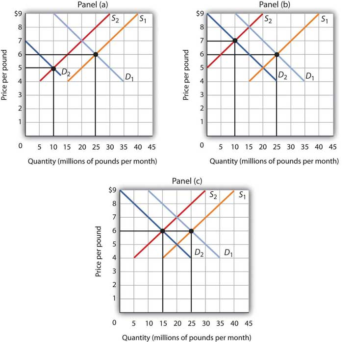Both the demand and the supply of coffee decrease. Since decreases in demand and supply, considered separately, each cause equilibrium quantity to fall, the impact of both decreasing simultaneously means that a new equilibrium quantity of coffee must be less than the old equilibrium quantity. In Panel (a), the demand curve shifts farther to the left than does the supply curve, so equilibrium price falls. In Panel (b), the supply curve shifts farther to the left than does the demand curve, so the equilibrium price rises. In Panel (c), both curves shift to the left by the same amount, so equilibrium price stays the same.
If the demand curve shifts farther to the left than does the supply curve, as shown in Panel (a) of Figure 3.11 "Simultaneous Decreases in Demand and Supply", then the equilibrium price will be lower than it was before the curves shifted. In this case the new equilibrium price falls from $6 per pound to $5 per pound. If the shift to the left of the supply curve is greater than that of the demand curve, the equilibrium price will be higher than it was before, as shown in Panel (b). In this case, the new equilibrium price rises to $7 per pound. In Panel (c), since both curves shift to the left by the same amount, equilibrium price does not change; it remains $6 per pound.
Regardless of the scenario, changes in equilibrium price and equilibrium quantity resulting from two different events need to be considered separately. If both events cause equilibrium price or quantity to move in the same direction, then clearly price or quantity can be expected to move in that direction. If one event causes price or quantity to rise while the other causes it to fall, the extent by which each curve shifts is critical to figuring out what happens. Figure 3.12 "Simultaneous Shifts in Demand and Supply" summarizes what may happen to equilibrium price and quantity when demand and supply both shift.
Figure 3.12 Simultaneous Shifts in Demand and Supply
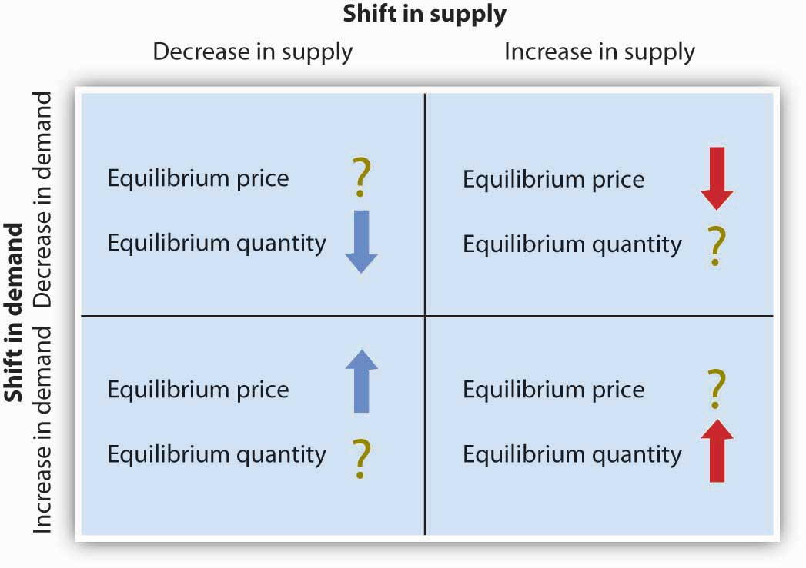If simultaneous shifts in demand and supply cause equilibrium price or quantity to move in the same direction, then equilibrium price or quantity clearly moves in that direction. If the shift in one of the curves causes equilibrium price or quantity to rise while the shift in the other curve causes equilibrium price or quantity to fall, then the relative amount by which each curve shifts is critical to figuring out what happens to that variable.
As demand and supply curves shift, prices adjust to maintain a balance between the quantity of a good demanded and the quantity supplied. If prices did not adjust, this balance could not be maintained.
Notice that the demand and supply curves that we have examined in this chapter have all been drawn as linear. This simplification of the real world makes the graphs a bit easier to read without sacrificing the essential point: whether the curves are linear or nonlinear, demand curves are downward sloping and supply curves are generally upward sloping. As circumstances that shift the demand curve or the supply curve change, we can analyze what will happen to price and what will happen to quantity.
Implicit in the concepts of demand and supply is a constant interaction and adjustment that economists illustrate with the circular flow model. The circular flow modelModel that provides a look at how markets work and how they are related to each other. provides a look at how markets work and how they are related to each other. It shows flows of spending and income through the economy.
A great deal of economic activity can be thought of as a process of exchange between households and firms. Firms supply goods and services to households. Households buy these goods and services from firms. Households supply factors of production—labor, capital, and natural resources—that firms require. The payments firms make in exchange for these factors represent the incomes households earn.
The flow of goods and services, factors of production, and the payments they generate is illustrated in Figure 3.13 "The Circular Flow of Economic Activity". This circular flow model of the economy shows the interaction of households and firms as they exchange goods and services and factors of production. For simplicity, the model here shows only the private domestic economy; it omits the government and foreign sectors.
Figure 3.13 The Circular Flow of Economic Activity
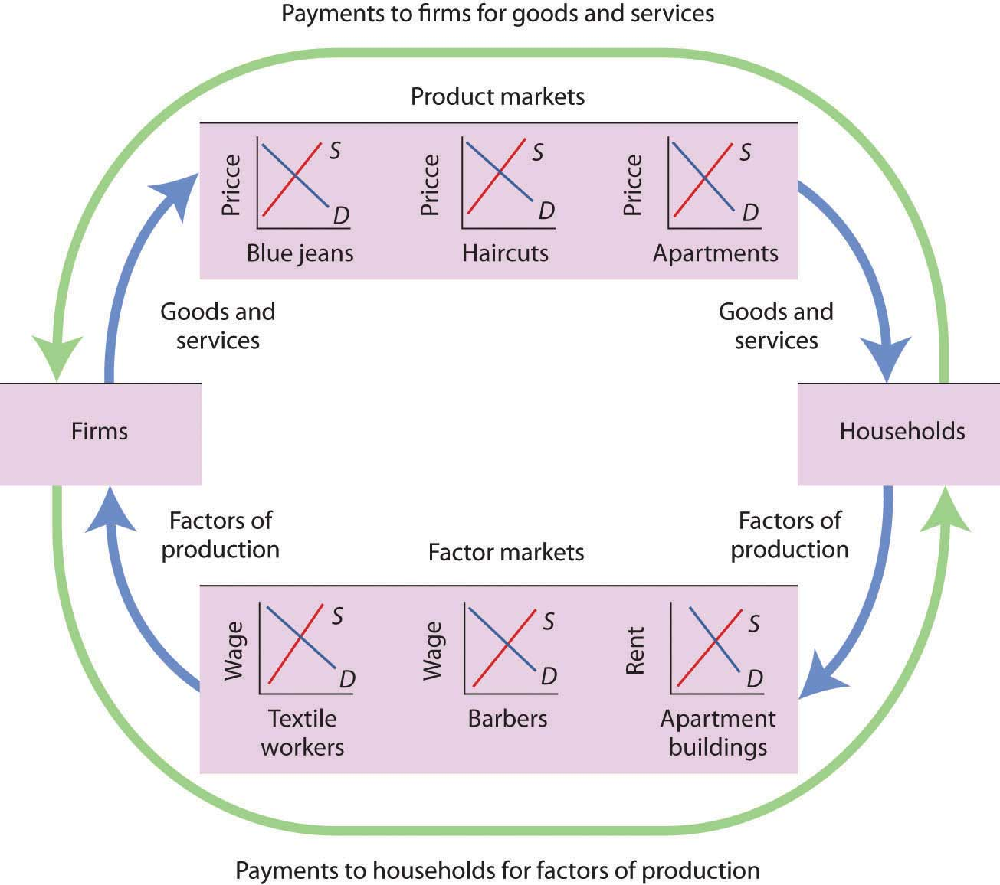This simplified circular flow model shows flows of spending between households and firms through product and factor markets. The inner arrows show goods and services flowing from firms to households and factors of production flowing from households to firms. The outer flows show the payments for goods, services, and factors of production. These flows, in turn, represent millions of individual markets for products and factors of production.
The circular flow model shows that goods and services that households demand are supplied by firms in product marketsMarkets in which firms supply goods and services demanded by households.. The exchange for goods and services is shown in the top half of Figure 3.13 "The Circular Flow of Economic Activity". The bottom half of the exhibit illustrates the exchanges that take place in factor markets. factor marketsMarkets in which households supply factors of production—labor, capital, and natural resources—demanded by firms. are markets in which households supply factors of production—labor, capital, and natural resources—demanded by firms.
Our model is called a circular flow model because households use the income they receive from their supply of factors of production to buy goods and services from firms. Firms, in turn, use the payments they receive from households to pay for their factors of production.
The demand and supply model developed in this chapter gives us a basic tool for understanding what is happening in each of these product or factor markets and also allows us to see how these markets are interrelated. In Figure 3.13 "The Circular Flow of Economic Activity", markets for three goods and services that households want—blue jeans, haircuts, and apartments—create demands by firms for textile workers, barbers, and apartment buildings. The equilibrium of supply and demand in each market determines the price and quantity of that item. Moreover, a change in equilibrium in one market will affect equilibrium in related markets. For example, an increase in the demand for haircuts would lead to an increase in demand for barbers. Equilibrium price and quantity could rise in both markets. For some purposes, it will be adequate to simply look at a single market, whereas at other times we will want to look at what happens in related markets as well.
In either case, the model of demand and supply is one of the most widely used tools of economic analysis. That widespread use is no accident. The model yields results that are, in fact, broadly consistent with what we observe in the marketplace. Your mastery of this model will pay big dividends in your study of economics.
What happens to the equilibrium price and the equilibrium quantity of DVD rentals if the price of movie theater tickets increases and wages paid to DVD rental store clerks increase, all other things unchanged? Be sure to show all possible scenarios, as was done in Figure 3.11 "Simultaneous Decreases in Demand and Supply". Again, you do not need actual numbers to arrive at an answer. Just focus on the general position of the curve(s) before and after events occurred.
Why are so many Americans fat? Put so crudely, the question may seem rude, but, indeed, the number of obese Americans has increased by more than 50% over the last generation, and obesity may now be the nation’s number one health problem. According to Sturm Roland in a recent RAND Corporation study, “Obesity appears to have a stronger association with the occurrence of chronic medical conditions, reduced physical health-related quality of life and increased health care and medication expenditures than smoking or problem drinking.”
Many explanations of rising obesity suggest higher demand for food. What more apt picture of our sedentary life style is there than spending the afternoon watching a ballgame on TV, while eating chips and salsa, followed by a dinner of a lavishly topped, take-out pizza? Higher income has also undoubtedly contributed to a rightward shift in the demand curve for food. Plus, any additional food intake translates into more weight increase because we spend so few calories preparing it, either directly or in the process of earning the income to buy it. A study by economists Darius Lakdawalla and Tomas Philipson suggests that about 60% of the recent growth in weight may be explained in this way—that is, demand has shifted to the right, leading to an increase in the equilibrium quantity of food consumed and, given our less strenuous life styles, even more weight gain than can be explained simply by the increased amount we are eating.
What accounts for the remaining 40% of the weight gain? Lakdawalla and Philipson further reason that a rightward shift in demand would by itself lead to an increase in the quantity of food as well as an increase in the price of food. The problem they have with this explanation is that over the post-World War II period, the relative price of food has declined by an average of 0.2 percentage points per year. They explain the fall in the price of food by arguing that agricultural innovation has led to a substantial rightward shift in the supply curve of food. As shown, lower food prices and a higher equilibrium quantity of food have resulted from simultaneous rightward shifts in demand and supply and that the rightward shift in the supply of food from S1 to S2 has been substantially larger than the rightward shift in the demand curve from D1 to D2.
Sources: Roland, Sturm, “The Effects of Obesity, Smoking, and Problem Drinking on Chronic Medical Problems and Health Care Costs,” Health Affairs, 2002; 21(2): 245–253. Lakdawalla, Darius and Tomas Philipson, “The Growth of Obesity and Technological Change: A Theoretical and Empirical Examination,” National Bureau of Economic Research Working Paper no. w8946, May 2002.
An increase in the price of movie theater tickets (a substitute for DVD rentals) will cause the demand curve for DVD rentals to shift to the right. An increase in the wages paid to DVD rental store clerks (an increase in the cost of a factor of production) shifts the supply curve to the left. Each event taken separately causes equilibrium price to rise. Whether equilibrium quantity will be higher or lower depends on which curve shifted more.
If the demand curve shifted more, then the equilibrium quantity of DVD rentals will rise [Panel (a)].
If the supply curve shifted more, then the equilibrium quantity of DVD rentals will fall [Panel (b)].
If the curves shifted by the same amount, then the equilibrium quantity of DVD rentals would not change [Panel (c)].

In this chapter we have examined the model of demand and supply. We found that a demand curve shows the quantity demanded at each price, all other things unchanged. The law of demand asserts that an increase in price reduces the quantity demanded and a decrease in price increases the quantity demanded, all other things unchanged. The supply curve shows the quantity of a good or service that sellers will offer at various prices, all other things unchanged. Supply curves are generally upward sloping: an increase in price generally increases the quantity supplied, all other things unchanged.
The equilibrium price occurs where the demand and supply curves intersect. At this price, the quantity demanded equals the quantity supplied. A price higher than the equilibrium price increases the quantity supplied and reduces the quantity demanded, causing a surplus. A price lower than the equilibrium price increases the quantity demanded and reduces the quantity supplied, causing a shortage. Usually, market surpluses and shortages are short-lived. Changes in demand or supply, caused by changes in the determinants of demand and supply otherwise held constant in the analysis, change the equilibrium price and output. The circular flow model allows us to see how demand and supply in various markets are related to one another.
Which of the following goods are likely to be classified as normal goods or services? Inferior? Defend your answer.
Which of the following pairs of goods are likely to be classified as substitutes? Complements? Defend your answer.
A study found that lower airfares led some people to substitute flying for driving to their vacation destinations. This reduced the demand for car travel and led to reduced traffic fatalities, since air travel is safer per passenger mile than car travel. Using the logic suggested by that study, suggest how each of the following events would affect the number of highway fatalities in any one year.
The graphs below show four possible shifts in demand or in supply that could occur in particular markets. Relate each of the events described below to one of them.
Problems 1–5 are based on the graph below.
Problems 6–9 are based on the model of demand and supply for coffee as shown in Figure 3.10 "Changes in Demand and Supply" You can graph the initial demand and supply curves by using the following values, with all quantities in millions of pounds of coffee per month:
| Price | Quantity demanded | Quantity supplied |
|---|---|---|
| $3 | 40 | 10 |
| 4 | 35 | 15 |
| 5 | 30 | 20 |
| 6 | 25 | 25 |
| 7 | 20 | 30 |
| 8 | 15 | 35 |
| 9 | 10 | 40 |
Problems 10–15 are based on the demand and supply schedules for gasoline below (all quantities are in thousands of gallons per week):
| Price per gallon | Quantity demanded | Quantity supplied |
|---|---|---|
| $1 | 8 | 0 |
| 2 | 7 | 1 |
| 3 | 6 | 2 |
| 4 | 5 | 3 |
| 5 | 4 | 4 |
| 6 | 3 | 5 |
| 7 | 2 | 6 |
| 8 | 1 | 7 |